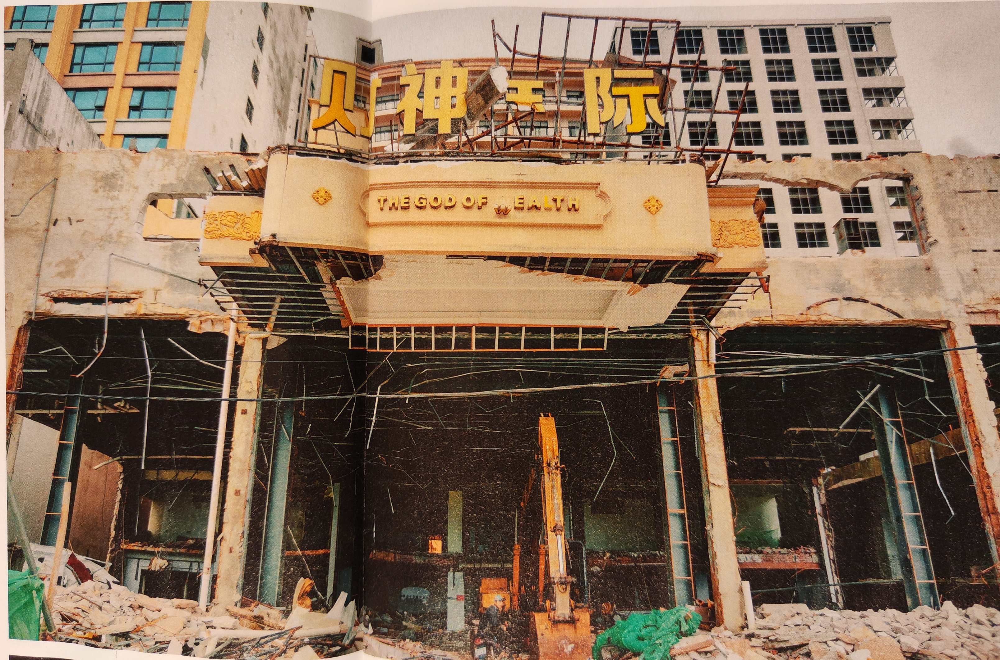
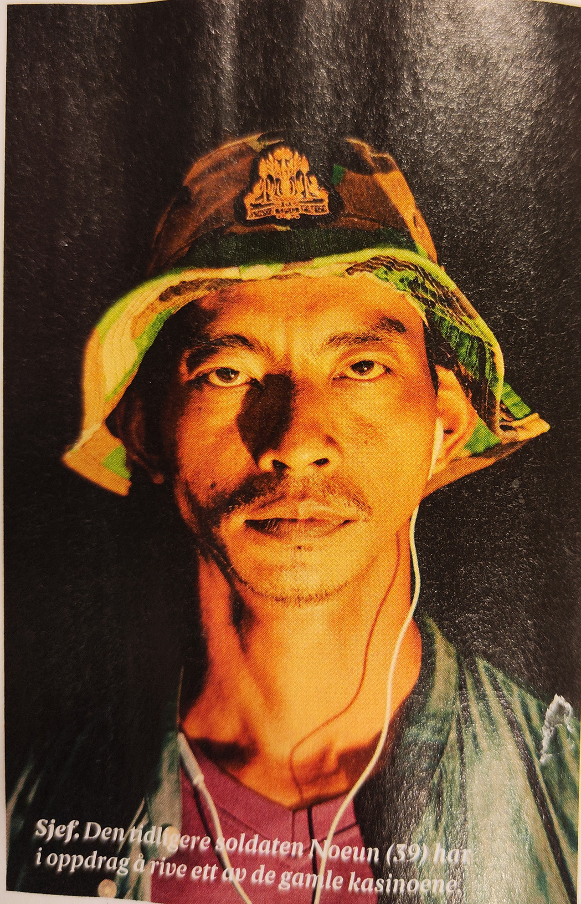
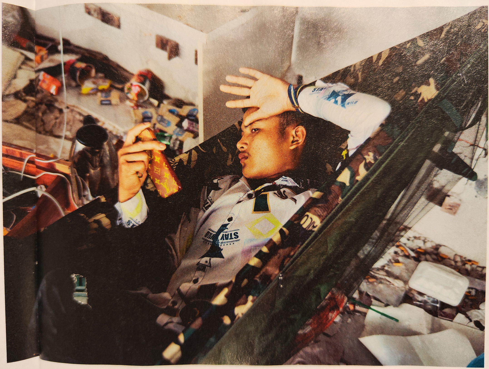
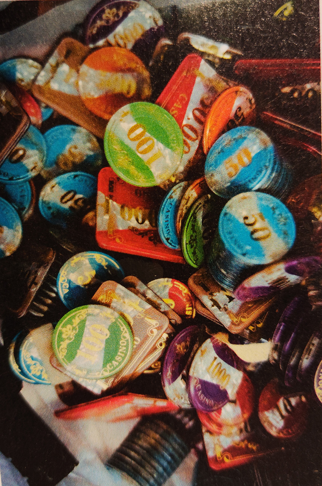

You know I’m born to lose,
(Motorhead: Ace of Spades) |
   |

Søppel. For noen år siden ville du Vært rik om du hadde disse sjetongene. Nå er de verdiløse plastbiter. Ruin. En gang var «The God of Wealth” ett av de gjeve kasino- Ene i Sihaniujville. Nå skal det rives. Pause. Nou Samnang (18) Hviler i hengekøyen i det som en gang var lobbyen i «The God of Wealth». Foran inngangen. Dyre biler sto parkert utenfor. Innenfor dørene ble hundredollarsedler vekslet inn i sjetonger mens alkoholen fløt fritt. Belle Bayon og The God of Wealth var bare 2 Av rundt 200 kasinoer I byen den gang. Eventyret hadde begynt noen år tidligere. Kinesiske investorer ble logget til landet av gode skatteordninger. Mellom 2013 og 2017 investerte kinesiske selskaper – med støtte fra Beijing-myndighetene – over 50 milliarder kro- ner i Kambodsja. Den kinesiske partiformannen, Xi Jinping, ville bygge en «perlerad» av Kinne-vennlige hav- ner i Asia. Dypvannshavnen i Sihannoukville var en av de viktigste «perlene». Og myndighetene i Kambodsja tok villig imot alle investeringene i Håp om at det ville skape vekst og utvikling. De skapte en økonomisk frisone rundt havnebyen for å tiltrekke seg utenlandske penger. Mye av disse pengene ble brukt til å bygge ka- sinoer. Gambling er forbudt i Kina, men mange Kinesere elsker å spille for penger. Macao har lenge vært et yndet reisemål. Den tidligere por- tugisiske kolonien ble overtatt av Kina i 1999, men byen fikk beholde kasinolisensen. Men Macao er for lite til å håndtere etterspørselen fra kinesiske gamblere. Sihanoukville, med sine gunstige økonomiske ordninger og Kine-venn- lige myndigheter, virket perfekt. |
||||
| 24 | A - Magasinet | A - Magasinet | 25 | |||